Interesting Applications of Digital Source and Digital Capture on the V93000
Kent Luehman, Verigy
Yin Kun, Verigy
Paper ID: 104949
Abstract
Functional testing of today's highly complex devices offers many challenges. Digital device tests include both traditional deterministic pattern tests and digital tests that produce variable data output. Register-based setup and digital waveform capture is common in many devices.
The V93000 Digital Source and Capture features offer powerful solutions to these test challenges. Creative application of Digital Source and Capture can save test time, reduce test setup maintenance and improve reusability of test program content.
A Digital Source technique for efficient register-based device setup is described. It offers great flexibility during program development, fast and efficient multi-site support for variable trim data and zero execution time overhead in most applications.
A Digital Capture technique for fast data re-alignment to a frame-sync signal without using match-loops is described.
Digital Source Techniques
DUT Register Writing Overview
In most devices setup, control and data transfer is performed by writing-to and reading-from registers. Typical applications include SOC devices, base band and other devices which have embedded analog-to-digital converters (ADC) and digital-to-analog converters (DAC). Register address and data is typically embedded into the vector pattern using one of several techniques.
The test engineer sometimes does not deal device registers, especially for digital-only devices. The register info is included in simulation patterns supplied by designers. The patterns are translated directly into the tester vector format, Figure 1. Although the patterns are easy to convert it is difficult to make changes if the DUT register setups need to be modified during test development.
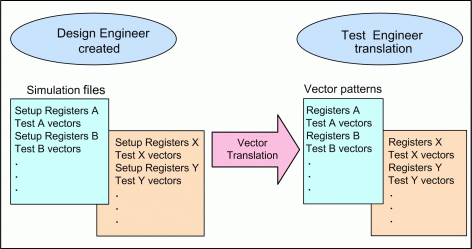
When testing mixed-signal devices, the register settings are frequently sent directly from the test program, Figure 2. This gives the test engineer easy control over device parameters such as attenuation, gain and filter settings allowing optimization of test setup. Two techniques are commonly employed to send the values to the DUT.
In one technique, a function converts the register address and data into the vector format and then downloads the results to vector memory using firmware commands such as VECD or VDCP. In the other common technique sequencer instructions are reprogrammed within a specially prepared vector label to point to the desired register address and data. The functions then execute the vectors to setup the register in both techniques. These steps are repeated for each register setting and, when all registers have been updated, the main test pattern is executed.
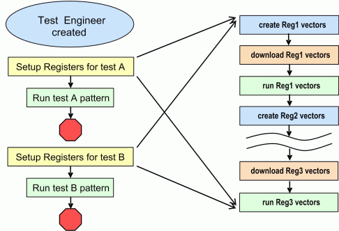
Both techniques offer flexibility during program development but create challenges for program optimization and test time reduction.
- Multiple vector executions are required to send a set of register data to the DUT. Due to data generation, download and vector sequencer start and stop overhead, the execution time is much longer than a single label containing all register settings.
- The "live" creation and execution of register vector data inhibits combining multiple measurements into a single pattern execution. Any function based register write operation between measurements forces a break in the vector pattern.
The first issue can be solved by translating the sequential register write operations into a single vector label for registers. The second issue can be solved by concatenating the register label to the beginning the main test pattern. Then all register-write function calls must to be disabled in the program.
This is time-consuming and error-prone and probably requires a re-validation of the new vector file and test program due to the extensive modifications. After modification program development flexibility is lost. All steps need to be repeated if the register map changes or if a test or setup condition needs to be added or modified.
Making such extensive changes as the program nears production release is risky. Is there a way to have flexibility during program development without sacrificing production test time? With Digital Source Memory (DSM) we can overcome the challenges and risks.
Digital Source Memory for Register Writing
Flexibility to specify register address and data within the test program, required for minimal development time, is retained. Register writing overhead is reduced to zero simply by changing a program flag and saving a pattern file. Design of optimized tests from the start is simplified as result of analysis and planning to utilize DSM.
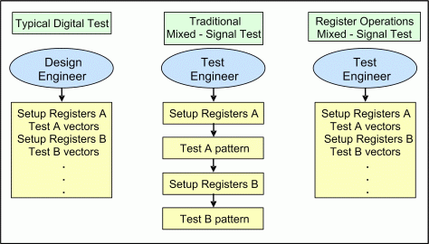
Effectively utilizing this technique requires early planning and attention to the sequence of tests. Register address and value settings for each test need to be tabulated. The main test pattern associated with each test should be included in the table. This information will be used for development of the DSM setups and structure of test patterns.
Group tests with similar base register settings and use the same tester hardware setups such as inputs, outputs, ranges, filter, etc. These tests are good candidates for combining into single pattern execution. Analyze the differences between base register setups and record the number of different register settings and the differences. For example, testing multiple DAC amplifier gain settings, the same waveforms and base register setups, except for the gain register values, are used for all tests.
Test Name |
Main Test Pattern |
# Reg |
# Reg Diff |
Register Differences |
|---|---|---|---|---|
DAC Test |
DAC_Test |
7 |
na |
Gain = 4 Range = 1 |
DAC Gain Step 1 |
DAC_Gain_1 |
7 |
2 |
Gain = 0 Range = 0 |
DAC Gain Step 2 |
DAC_Gain_2 |
7 |
2 |
Gain = 7 Range = 2 |
Once this information has been gathered, the pattern structure for each test can be defined. A high-level pattern structure diagram, Figure 4, shows the sequence and function of the major vector blocks in the pattern for the DAC Test. A simplified vector sequencer template illustrates the general structure of the DSM sequencer commands used in the final pattern. The patterns for two gain step tests will look similar.
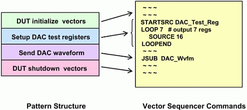
Using these diagrams it is easy to visualize combining multiple measurements into a single pattern. The DAC gain example is illustrated in Figure 5. Register settings for two additional gain steps are added to the end of the DAC_Test_Reg DSM label. Three tests are performed in one continuous pattern execution. This is impossible with a technique that must create, download and execute vector data for each register.
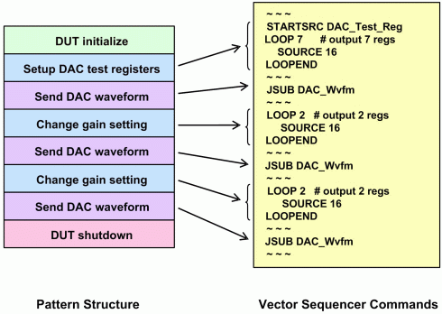
Creating Digital Source Memory Labels
Before the DSM sequence commands shown in the template can be inserted in the pattern the actual DSM labels must first be created. A high level overview of the steps to set up DSM labels is presented. Detailed procedures for setting up DSM are in the V93000 documentation and were presented during VOICE 20061 and therefore are not included.
A DSM Vector Variable Configuration (VVC) is created to specify the download format of the sourced data, Figure 6. It includes required pins and static vector data to define the control and framing for writing registers. A TestMethod function wrtREG() downloads register data using this format.
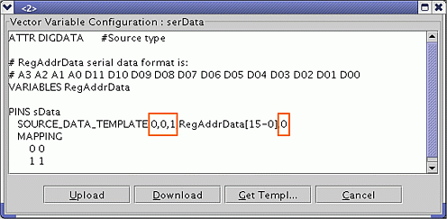
Vector labels of type DSRC are created for each test's register settings. When defining the Vector Variable Configuration Usage (VVCU) for each DSRC label, Figure 7, declare the number of frames larger then needed to permit adding registers during development or for debug purposes.
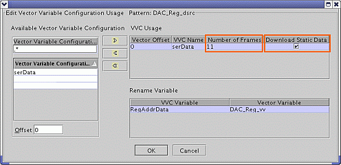
Select Download Static Data to download the fixed data specified in the VVC to the DSRC label, Figure 8.
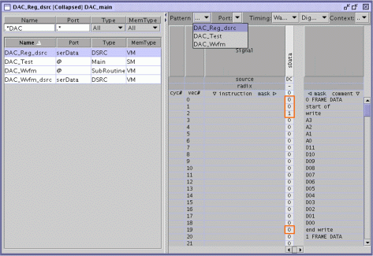
Add the STARTSRC sequencer instruction to point to the desired DSRC label followed by a counted LOOP, set to the required number of registers, surrounding the SOURCE instruction, Figure 9.
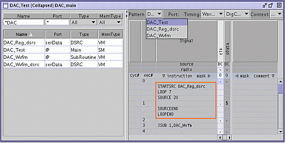
Register Operation TestMethod Functions
For maximum flexibility during program development, the test engineer needs an easy way to set and download register values from the TestMethod. Two simple functions provide easy-to-use register write operations.
resetREG(vecVar, numReg) - Execute this function first specifying the vector variable associated with the DSRC label that will be written to. A static ARRAY_I REG_frames is prepared for temporary register data storage before download.
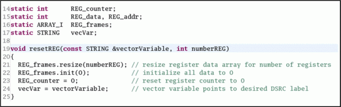
wrtREG(regAddr, regData) - This function combines the register address and data to match the specification in the VVC. The combined data is stored in the ARRAY_I REG_frames prepared by the resetREG function. After numReg calls to wrtREG(), REG_frames is automatically downloaded to the DSRC label.
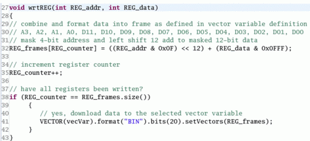
An excerpt of the DAC Gain TestMethod demonstrates how the functions are used to create and download the register data needed to perform multiple gain tests in a single execution. Register calls are surrounded by #ifdef WRITE_REG and #endif compiler directives so the register functions can easily be disabled when the register settings are finalized after debug. Defining WRITE_REG and saving the DSRC labels are the only changes needed to switch program operation from "live" creation of register data to production mode with zero test time overhead for register writing. Revalidation of the vectors isn't needed because the vectors are not changed.
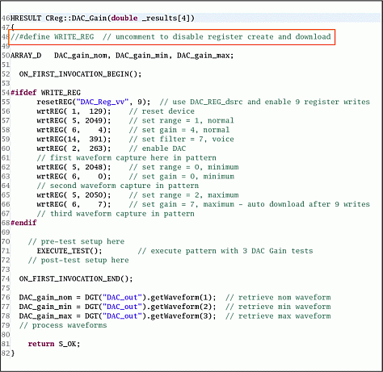
Dynamic Register Data
The DSM technique is effective for operations that calculate register values dynamically at run-time such as trimming. The only difference in usage from the above case is the wrtREG() function calls are not disabled. Register data is calculated and downloaded for each device. There is a downloading overhead but, because all register values are downloaded in a single operation, the download time isn't large. A block of 35 16-bit register values takes only 1.8ms to download.
Site-specific data is easily handled in a multi-site program by not including the register operations within the ON_FIRST_INVOCATION block and using a setup-focus command before the download operation. If only a few registers in a test are dynamically created the fixed registers can be stored in one DSM label. Dynamic registers created live during execution are stored in another DSM label. Use a STARTSRC to switch to the dynamic label at the required point in the pattern. If there are only a few static registers it is easiest to treat all the data as dynamic and create it live.
Digital Capture Technique
Digital Capture for Frame Sync Realignment
Devices that output data serially sometimes use a separate frame-sync signal to indicate the start of the data frame. For some devices the exact timing of the frame-sync relative to the start of a pattern is non-deterministic. However, once started, the frame-sync occurs at a regular period based on the device clock. Analog settling time of reset circuitry or a PLL may result in such an uncertainty.
Match-loops and/or edge search techniques are typically employed to re-align the tester to the frame-sync. These techniques can be difficult to apply and time consuming in production applications. If the frame-sync signal is stable within a cycle, but may occur on a different cycle number for each device start, an alternative to match-loops is possible using Digital Capture.
The Digital Capture frame sync realignment technique is demonstrated using a free-running serial output 8-bit ADC with a separate frame sync signal. Figure 13 shows an example data output alignment between the serial data output, the frame sync and the digital capture framing.
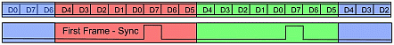
Digital Capture is setup on the serial data output specifying an 8-bit serial frame. The data framing will stag with the first capture in the pattern. A serial-to-parallel conversion is performed on the frame when the data is uploaded to the workstation. If the frame is not aligned to the frame-sync, the data returned will be incorrectly converted. Capturing the frame sync signal simultaneously with the data permits determination of the misalignment and mathematical realignment in the workstation. The execution time required to do the mathematical re-alignment is generally much less then the overhead incurred when using match-loops. Because the frame sync occurs at regular interval once started, only a small window covering the expected start position of the frame-sync need be captured. This reduces the amount of data that must be retrieved from the tester contributing to improved throughput.
To use this technique setup separate Digital Captures for the serial data output, sData, and the frame-sync, frmSync. Start the digital capture on both pins at the same vector location after the frame-sync is running. Set the frame-sync capture size to one. Set the serial data output capture length to the number of required samples plus 1.
The mathematical processing of the data is shown graphically in Figure 14, the TestMethod code is shown in Figure 15.
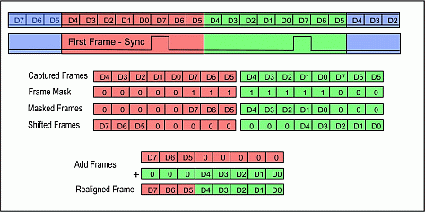
Upload the captured data. The frame-sync value determines the frame-sync offset relative to the captured frame. The offset is used to mask and shift sData so the bits from two successive words are properly aligned within their frames. The two frames are then added together to form the realigned data. The process is performed on all remaining data in the sData array.
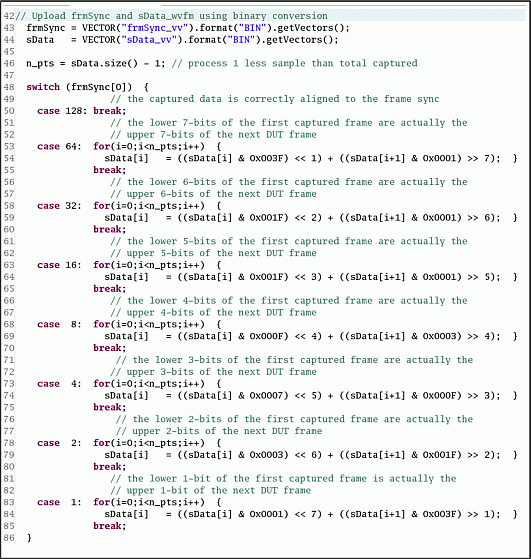
Conclusions
Digital Source Memory and Digital Capture are powerful tools in the test engineer's problem solving toolkit. Creative application of these capabilities permits the test engineer to quickly develop more efficient tests and minimize test time. A critical element to effective application of both Digital Source Memory and Digital Capture is careful up-front analysis of the test challenge and possible solutions.
About the Authors
Kent Luehman has been Technical Consultant at Verigy, Agilent Technologies and Hewlett-Packard for 20 years. He supported the V93000, 83000 and 82000 systems as well as HP's general-purpose bench and component-test instruments and data acquisition systems. Before that he spent 12 years at Hewlett-Packard's New Jersey Division. He was on the R&D team for the first HP-IB power supplies then moved to marketing for data acquisition systems. Moving back to R&D, he was a project lead for a line of low-cost PC-controlled general purpose test instruments.
Kun Yin has been Application Engineer at Verigy for 2 years. Before that he spent 3 years as an analog circuit design engineer in National Semiconductor Zhejiang University Analog and Mix Signal IC Laboratory. He gained experience as verification engineer in a start-up company in 2001.